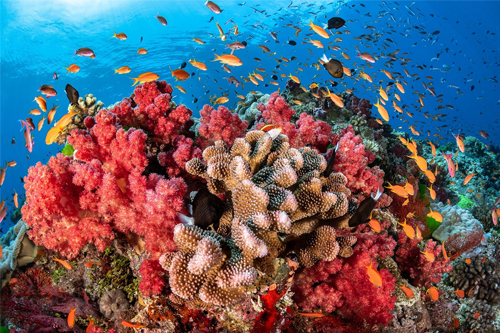
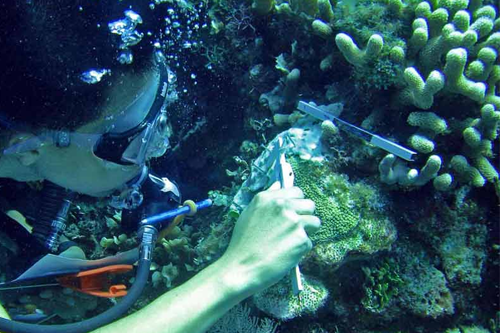
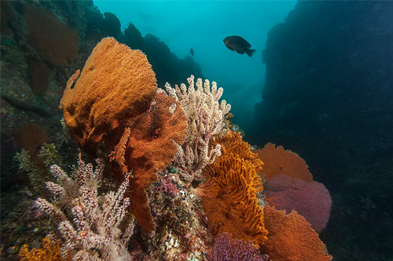
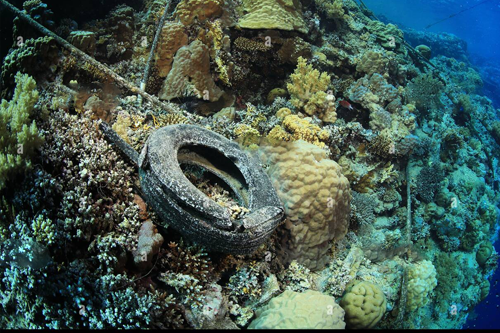
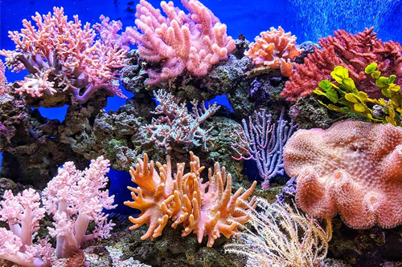

Debido al aumento de los turistas a las zonas hoteleras,
provoca que muchos de los hoteles tiren sus aguas grises y residuales, contribuyendo a
la
sedimentación y contaminación del arrecife de coral; así como la falta de capacitación
para
los turistas y el seguimiento de las reglas, donde estos los acaten.
Además, afectan a otros como son: comunidades de manglares, pastos marinos, algunas
especies
de plantas, y por supuesto todas las especies que en ella habitan.
Debido al aumento de los turistas a las zonas hoteleras, provoca que
muchos de los hoteles tiren sus aguas grises y residuales, contribuyendo a la sedimentación y
contaminación del arrecife de coral; así como la falta de capacitación para los turistas y el
seguimiento de las reglas, donde estos los acaten.
Además, afectan a otros como son: comunidades de manglares, pastos marinos, algunas especies de
plantas,
y por supuesto todas las especies que en ella habitan.
Basura que llega al mar, residuos como: plásticos, botellas, desechos marinos, ya que estos pueden engancharse a los corales y bloquear la luz solar necesaria para la fotosíntesis, quedando atrapado dentro de los corales, provocando un daño en el rompimiento de los arrecifes.
Practique buceo con equipo de submarinismo de forma segura y
responsable, evite tocar los arrecifes, evite anclar la embarcación sobre un arrecife, busque un
fondo de arena, o use amarraderos si estos se encuentran disponibles, el uso de bloqueador solar
será únicamente permitido el de uso ecológico, ya que el uso del convencional contiene
oxibenzona, lo cual provoca un daño en los corales, Use una camiseta de mangas largas o de
neopreno para evitar la quemadura solar.
Practique buceo con equipo de submarinismo de forma segura y
responsable, evite tocar los arrecifes, evite anclar la embarcación sobre un arrecife, busque un
fondo de arena, o use amarraderos si estos se encuentran disponibles, el uso de bloqueador solar
será únicamente permitido el de uso ecológico, ya que el uso del convencional contiene
oxibenzona, lo cual provoca un daño en los corales, Use una camiseta de mangas largas o de
neopreno para evitar la quemadura solar.
No hay problema para respirar lenta y suavemente, sólo asegúrese de que mantengan un ritmo regular y constante.
Para bucear de forma segura debido a las posibles variaciones en tantos parámetros, por lo que siempre debe asegurarse de informarse sobre las condiciones actuales la mañana del día en que se planea el buceo.
Los controles de seguridad del equipo antes del buceo son otra necesidad absoluta si desea asegurarse de que está lo más absolutamente seguro posible: el 15% de las muertes por buceo en 2016 fueron causadas por fallas en el equipo que podrían haberse evitado si los buceadores hubieran revisado sus kit de buceo con más rigor antes de entrar al agua.
Declarada Patrimonio de la Humanidad de la Unesco, la Gran Barrera de Coral en Australia es posiblemente el arrecife coralino más grande del planeta, con más de 2.600 kilómetros. Se encuentra en la costa del estado de Queensland y cuenta con más de 2.900 arrecifes individuales y 900 islas para bucear.
Este arrecife de coral ofrece una oportunidad única para descubrir un ecosistema marina fascinante. Además, su conservación se debe a la intervención de la ONG Conservation International, puesto que podría haber desaparecido.
Belice tiene una inmensa diversidad de hábitats marinos declarados Patrimonio de la Humanidad por la Unesco. Esta barrera de coral es la segunda más grande con más de 1.000 kilómetros extendidos de México a Honduras. Además, es el hogar de más de cientos de variedades de corales, especies de peces como el tiburón coralino y el tiburón limón.
Dentro de la gran riqueza natural de México, los arrecifes destacan por su belleza, gran colorido y la enorme diversidad de especies subacuáticas que viven dentro de ese ecosistema. Estos arrecifes se encuentran en la isla de Cozumel y son los arrecifes ideales para bucear junto a los peces de colores, rayas águila o tiburones nodriza.!
Sin importar donde viva, cerca o lejos de la costa, existen muchas formas de conservar la salud de los arrecifes de coral. Muchos de los peligros para los arrecifes de coral se producen directamente en el agua, pero muchos otros provienen de actividades que realizan los turistas que practican la actividad.
Sin importar donde viva, cerca o lejos de la costa, existen muchas formas de conservar la salud de los arrecifes de coral. Muchos de los peligros para los arrecifes de coral se producen directamente en el agua, pero muchos otros provienen de actividades que realizan los turistas que practican la actividad.